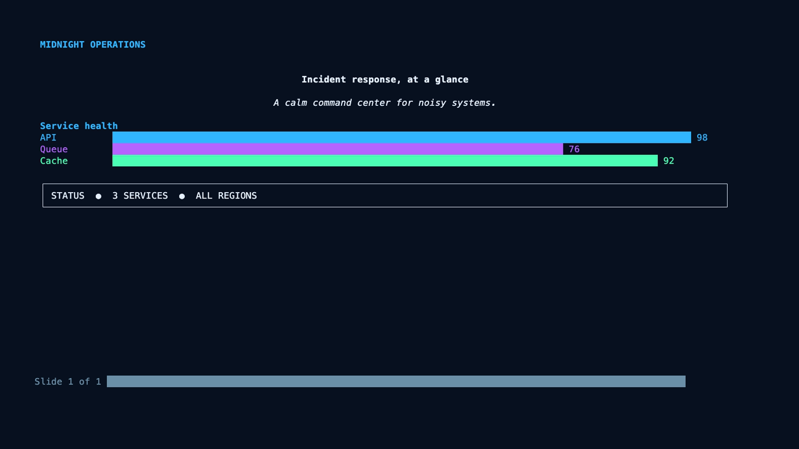
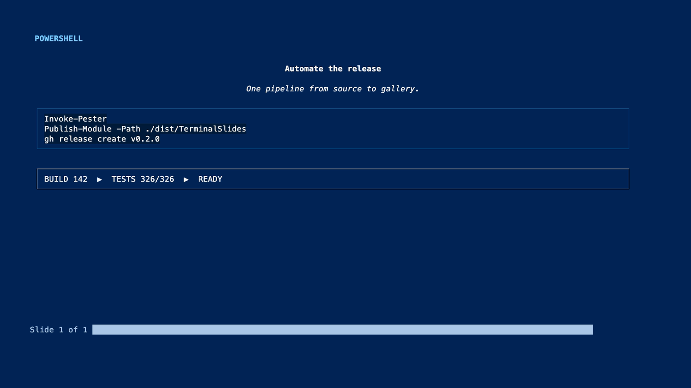
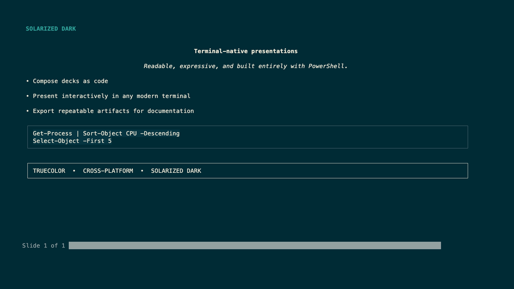
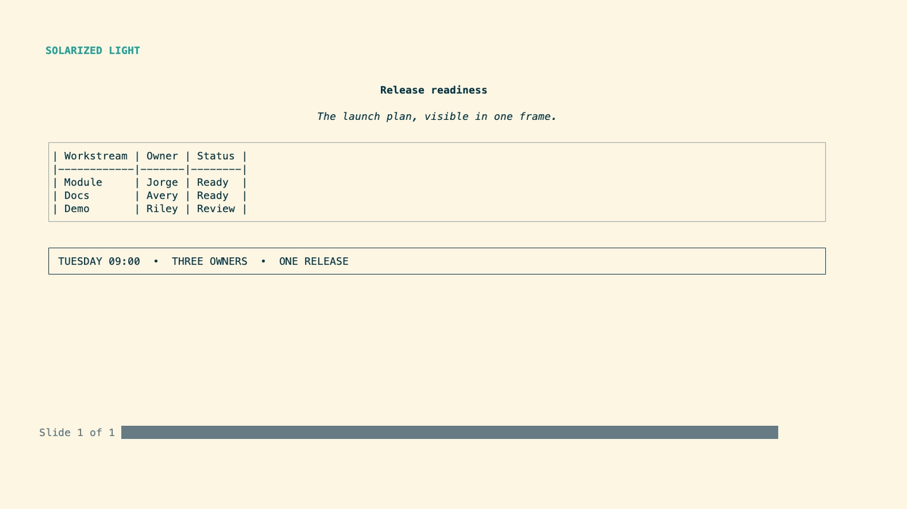
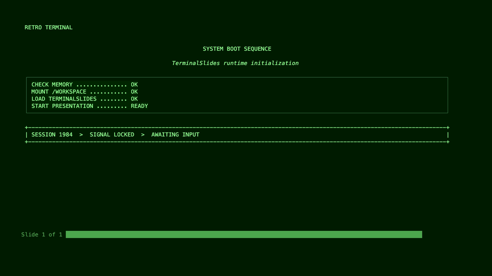
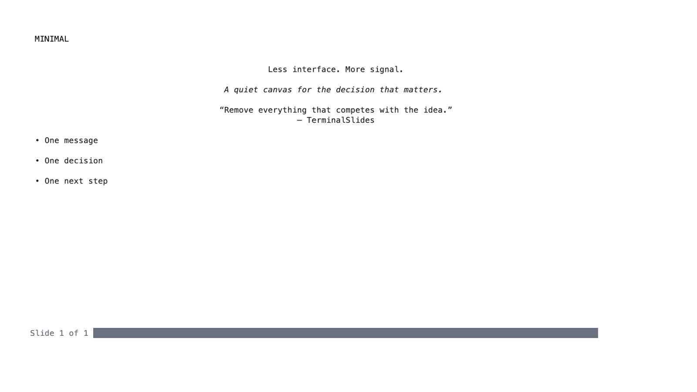
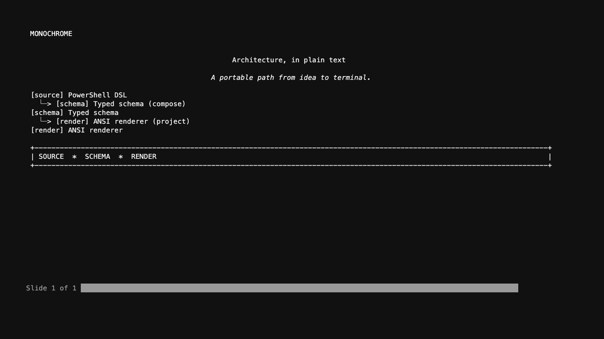
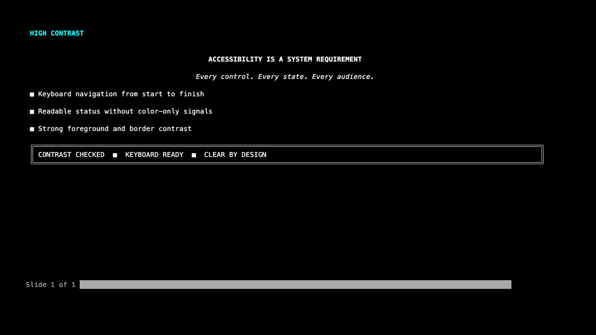

A fluent slide DSL
Chain slides through the pipeline and compose each frame with text, bullets, code, tables, charts, diagrams, quotes, boxes, images, and notes.
$deck | Add-TerminalSlide -Title 'Architecture' -Content { ... }
PowerShell-native presentations
Build expressive, keyboard-driven slide decks with a fluent PowerShell API. Render text, code, charts, diagrams, and speaker notes anywhere ANSI runs.
Import-Module ./TerminalSlides.psd1
PowerShell 7.4+ Windows, macOS, and Linux MIT licensed
Built for the command line
Compose slides from familiar PowerShell commands and let TerminalSlides handle layout, ANSI rendering, navigation, and export.
Chain slides through the pipeline and compose each frame with text, bullets, code, tables, charts, diagrams, quotes, boxes, images, and notes.
Reveal ideas progressively, jump between slides, show notes, open an overview, blank the screen, or start a timer without touching a mouse.
Viewport-aware layouts and capability detection provide a rich truecolor experience with graceful plain-text fallback.
Export the same deck to HTML, Markdown, PSD1, JSON, ANSI, or plain text for documentation, CI artifacts, and sharing.
Quick start
Clone the repository, import the module, and start presenting. The fluent API keeps the structure readable as your story grows.
Clone the repository and import its module manifest.
Build slides with ordinary PowerShell.
Run the deck in any modern terminal.
Import-Module ./TerminalSlides.psd1
$deck = New-TerminalPresentation `
-Title 'Shipping the terminal way' `
-Theme Midnight
$deck | Add-TerminalSlide `
-Title 'Why TerminalSlides?' `
-Content {
Add-SlideBullet 'No context switching'
Add-SlideBullet 'Built for automation' `
-RevealStep 1
}
Show-TerminalPresentation -Presentation $deckPublic command reference
Search the complete TerminalSlides API, filter by workflow, then copy a focused PowerShell example.
No commands match that search.
Eight themes. Eight stories.
Every preview is captured from TerminalSlides at 1600 × 900 with different presentation content. Open any frame to inspect it full size.








Presenter controls
Every action is one keystroke away. The controls are designed to disappear until you need them.
Your next deck starts here
Clone TerminalSlides and turn the terminal you already use into a focused presentation environment.
{kind=link}
{kind=link}
{kind=link}
{kind=link}
{kind=link}
{kind=link}
{kind=link}
{kind=link}